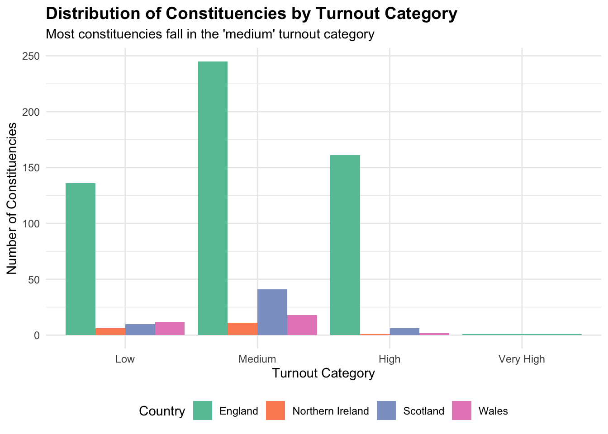
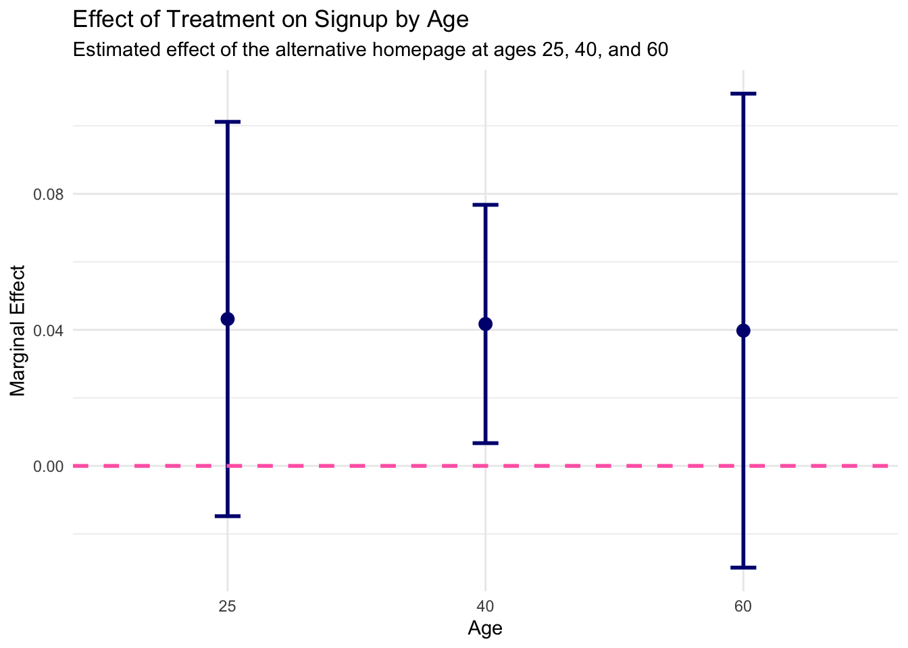

In this page, I present highlights from three data analysis projects completed during my final undergraduate year. Each project demonstrates my ability to clean and manipulate data, create insightful visualisations, and apply statistical models to answer real-world questions. Together, these examples highlight both my technical capabilities and my ability to communicate data-driven insights clearly.
This project focused on data visualisations using the dataset from the National Longitudinal Survey of Youth and used in Gelman and Hill (2007), containing The data 434 observations measured on five variables.
For this project, I created an interactive plot, the corresponding code chuck is shown below, to examine the relationship between a child’s test score, the mother’s IQ, and family advantage, a new category I constructed from the raw data, to illustrate the impact that inherited privilege and merit have on a child’s intelligence.
my_plot4 <- kidiq %>%
ggplot(aes(x = mom_iq, y = kid_score, colour = family_advantage,
group = family_advantage,
tooltip = family_advantage,
data_id = family_advantage)) +
geom_point(alpha = 0.3) +
geom_smooth_interactive(se = FALSE) +
labs(
title = "The Myth of Meritocracy",
subtitle = "Is merit or birth right privilege the most prevalent determinant of a child's success?",
x = "Mother's IQ",
y = "Child's Test Score",
colour = "Family Advantage",
caption = "Data: Test scores and mother's characteristics") +
theme_minimal() +
theme(legend.position="right") +
scale_colour_manual(values = values)
girafe(ggobj = my_plot4,
options = list(
opts_hover(css = "stroke-width:3;"),
opts_hover_inv(css = "opacity:0.1;"),
opts_tooltip(opacity = .9)
))For this project the tasks were centred on understanding real cases of data analytics in the field of political science.
The plot I created, seen below, categorises constituencies by voter turnout and compares them across the countries of the UK, helping to identify areas of high or low engagement. Here I demonstrate my ability to transfer these technical skills to real-life applications, to help guide policymakers, political campaigns, and researchers in understanding participation patterns.

For this project, I created a simulated dataset to conduct an A/B test run for a fictitious political party delivering messages on its official website. The goal was to increase the probability that visitors sign up as supporters, comparing the standard homepage (control) with an issue-focused homepage highlighting a hot-button issue.
Here, I use the data created to run regressions estimating the probability that a visitor signs up as a party supporter based on whether they saw the treatment or control homepage. I used the model to predict probabilities under both the control and treatment conditions and calculated the Average Treatment Effect (ATE) to quantify the impact. This demonstrates my ability to simulate experimental data, apply logit models, interpret coefficients, and translate statistical results into meaningful real-world insights.
logit_model <- glm(support_signup ~ treatment, data = party_ab, family = binomial(link = "logit"))
p_hat_control <- predict(
logit_model,
newdata = data.frame(treatment = 0),
type = "response")
p_hat_treated <- predict(
logit_model,
newdata = data.frame(treatment = 1),
type = "response")
ate_logit <- p_hat_treated - p_hat_controlBelow, I created a plot to show the effect of the treatment homepage on signup probability for three age groups (25, 40, and 60).
## visitor_id treatment support_signup age high_interest
## 1 1 1 1 48 1
## 2 2 0 0 60 0
## 3 3 1 0 42 0
## 4 4 1 0 53 0
## 5 5 0 1 29 0
## 6 6 1 1 38 1
## readtext object consisting of 19 documents and 0 docvars.
## # A data frame: 19 × 2
## doc_id text
## <chr> <chr>
## 1 Bryan_1896_D.txt "\"WILLIAM JE\"..."
## 2 Bush_1992_R.txt "\"GEORGE BUS\"..."
## 3 Carter_1980_D.txt "\"JIMMY CART\"..."
## 4 Clinton_2016_D.txt "\"HILLARY CL\"..."
## 5 Dewey_1948_R.txt "\"THOMAS DEW\"..."
## 6 Dole_1996_R.txt "\"ROBERT DOL\"..."
## # ℹ 13 more rows## Corpus consisting of 19 documents.
## Bryan_1896_D.txt :
## "WILLIAM JENNINGS BRYAN Telegram to William McKinley Concedin..."
##
## Bush_1992_R.txt :
## "GEORGE BUSH 41st President of the United States: 1989 ‐ 1993..."
##
## Carter_1980_D.txt :
## "JIMMY CARTER 39th President of the United States: 1977 ‐ 198..."
##
## Clinton_2016_D.txt :
## "HILLARY CLINTON Former United States Secretary of State Rema..."
##
## Dewey_1948_R.txt :
## "THOMAS DEWEY Former Governor of New York Telegram to Preside..."
##
## Dole_1996_R.txt :
## "ROBERT DOLE Former U.S. Senator from Kansas Presidential Ele..."
##
## [ reached max_ndoc ... 13 more documents ]## Clinton_2016_D.txt
## "HILLARY CLINTON\nFormer United States Secretary of State\nRemarks in New York City Conceding the 2016 Presidential Election\nNovember 09, 2016\nSenator Tim Kaine: My wife, Anne, and I are so proud of Hillary Clinton. [applpause]\n\nSecretary Clinton: Thank you. Thank you all. Thank you. [applpause]\n\nThank you all very much. Thank you. Thank you. Thank you so much. [applpause]\n\nVery rowdy group. Thank you, my friends. Thank you. Thank you, thank you so very much for being here and I love you all, too.\n\nLast night, I congratulated Donald Trump and offered to work with him on behalf of our country. I hope that he will be a successful president for all Americans. This is not the outcome we wanted or we worked so hard for and I'm sorry that we did not win this election for the values we share and the vision we hold for our country.\n\nBut I feel pride and gratitude for this wonderful campaign that we built together, this vast, diverse, creative, unruly, energized campaign. You represent the best of America and being your candidate has been one of the greatest honors of my life. [applpause]\n\nI know how disappointed you feel because I feel it too, and so do tens of millions of Americans who invested their hopes and dreams in this effort. This is painful and it will be for a long time, but I want you to remember this. Our campaign was never about one person or even one election, it was about the country we love and about building an America that's hopeful, inclusive and big-hearted.\n\nWe have seen that our nation is more deeply divided than we thought. But I still believe in America and I always will. And if you do, then we must accept this result and then look to the future. Donald Trump is going to be our president. We owe him an open mind and the chance to lead.\n\nOur constitutional democracy enshrines the peaceful transfer of power and we don't just respect that, we cherish it. It also enshrines other things; the rule of law, the principle that we are all equal in rights and dignity, freedom of worship and expression. We respect and cherish these values too and we must defend them. [applpause]\n\nNow — and let me add, our constitutional democracy demands our participation, not just every four years but all the time. So let's do all we can to keep advancing the causes and values we all hold dear; making our economy work for everyone not just those at the top, protecting our country and protecting our planet and breaking down all the barriers that hold any American back from achieving their dreams.\n\nWe've spent a year and a half bringing together millions of people from every corner of our country to say with one voice that we believe that the American dream is big enough for everyone — for people of all races and religions, for men and women, for immigrants, for LGBT people, and people with disabilities. For everyone. [applpause]\n\nSo now, our responsibility as citizens is to keep doing our part to build that better, stronger, fairer America we seek. And I know you will.\n\nI am so grateful to stand with all of you. I want to thank Tim Kaine and Anne Holton for being our partners on this journey. [applpause]\n\nIt has been a joy getting to know them better, and it gives me great hope and comfort to know that Tim will remain on the front lines of our democracy representing Virginia in the Senate. [applpause]\n\nTo Barack and Michelle Obama, our country owes you an enormous debt of gratitude. [applpause]\n\nWe — we thank you for your graceful, determined leadership that has meant so much to so many Americans and people across the world.\n\nAnd to Bill and Chelsea, Mark, Charlotte, Aidan, our brothers and our entire family, my love for you means more than I can ever express. You crisscrossed this country on our behalf and lifted me up when I needed it most — even four-month-old Aidan who traveled with his mom.\n\nI will always be grateful to the creative, talented, dedicated men and women at our headquarters in Brooklyn and across our country. [applpause]\n\nYou poured your hearts into this campaign. For some of you who are veterans, it was a campaign after you had done other campaigns. Some of you, it was your first campaign. I want each of you to know that you were the best campaign anybody could have ever expected or wanted. [applpause]\n\nAnd to the millions of volunteers, community leaders, activists and union organizers who knocked on doors, talked to neighbors, posted on Facebook, even in secret, private Facebook sites...[laughter and applause]...I want everybody coming out from behind that and make sure your voices are heard going forward. [applpause]\n\nTo everyone who sent in contributions as small at $5 and kept us going, thank you. Thank you from all of us.\n\nAnd to the young people in particular, I hope you will hear this. I have, as Tim said, spent my entire adult life fighting for what I believe in. I've had successes and I've had setbacks. Sometimes, really painful ones. Many of you are at the beginning of your professional public and political careers. You will have successes and setbacks, too.\n\nThis loss hurts, but please never stop believing that fighting for what's right is worth it. [applpause]\n\nIt is — it is worth it. [applpause]\n\nAnd so we need — we need you to keep up these fights now and for the rest of your lives.\n\nAnd to all the women, and especially the young women, who put their faith in this campaign and in me, I want you to know that nothing has made me prouder than to be your champion. [applpause]\n\nNow, I — I know — I know we have still not shattered that highest and hardest glass ceiling, but some day someone will and hopefully sooner than we might think right now. [applpause]\n\nAnd — and to all the little girls who are watching this, never doubt that you are valuable and powerful and deserving of every chance and opportunity in the world to pursue and achieve your own dreams.\n\nFinally...[applpause]\n\nFinally, I am so grateful for our country and for all it has given to me. I count my blessings every single day that I am an American. And I still believe as deeply as I ever have that if we stand together and work together with respect for our differences, strength in our convictions and love for this nation, our best days are still ahead of us. [applpause]\n\nBecause, you know — you know, I believe we are stronger together and we will go forward together. And you should never, ever regret fighting for that. You know, scripture tells us, \"Let us not grow weary in doing good, for in due season, we shall reap if we do not lose heart.\"\n\nSo my friends, let us have faith in each other, let us not grow weary, let us not lose heart, for there are more seasons to come. And there is more work to do.\n\nI am incredibly honored and grateful to have had this chance to represent all of you in this consequential election.\n\nMay God bless you and may God bless the United States of America."## [1] "character"## Corpus consisting of 19 documents, showing 19 documents:
##
## Text Types Tokens Sentences
## Bryan_1896_D.txt 43 51 2
## Bush_1992_R.txt 308 784 57
## Carter_1980_D.txt 317 752 37
## Clinton_2016_D.txt 473 1443 55
## Dewey_1948_R.txt 52 62 2
## Dole_1996_R.txt 362 1231 69
## Dukakis_1988_D.txt 432 1287 59
## Ford_1976_R.txt 243 518 22
## Goldwater_1964_R.txt 311 783 29
## Gore_2000_D.txt 473 1206 57
## Hoover_1932_R.txt 58 77 4
## Humphrey_1968_D.txt 289 694 43
## Kerry_2004_D.txt 578 1867 104
## McCain_2008_R.txt 490 1483 78
## McGovern_1972_D.txt 347 811 37
## Mondale_1984_D.txt 302 818 57
## Nixon_1960_R.txt 295 1005 48
## Romney_2012_R.txt 292 814 54
## Stevenson_1952_D.txt 219 425 24## [1] "Bryan_1896_D.txt" "Bush_1992_R.txt" "Carter_1980_D.txt"
## [4] "Clinton_2016_D.txt" "Dewey_1948_R.txt" "Dole_1996_R.txt"
## [7] "Dukakis_1988_D.txt" "Ford_1976_R.txt" "Goldwater_1964_R.txt"
## [10] "Gore_2000_D.txt" "Hoover_1932_R.txt" "Humphrey_1968_D.txt"
## [13] "Kerry_2004_D.txt" "McCain_2008_R.txt" "McGovern_1972_D.txt"
## [16] "Mondale_1984_D.txt" "Nixon_1960_R.txt" "Romney_2012_R.txt"
## [19] "Stevenson_1952_D.txt"## Corpus consisting of 19 documents, showing 19 documents:
##
## Text Types Tokens Sentences Dates Party PNames
## Bryan_1896_D.txt 43 51 2 1896 D Bryan
## Bush_1992_R.txt 308 784 57 1992 R Bush
## Carter_1980_D.txt 317 752 37 1980 D Carter
## Clinton_2016_D.txt 473 1443 55 2016 D Clinton
## Dewey_1948_R.txt 52 62 2 1948 R Dewey
## Dole_1996_R.txt 362 1231 69 1996 R Dole
## Dukakis_1988_D.txt 432 1287 59 1988 D Dukakis
## Ford_1976_R.txt 243 518 22 1976 R Ford
## Goldwater_1964_R.txt 311 783 29 1964 R Goldwater
## Gore_2000_D.txt 473 1206 57 2000 D Gore
## Hoover_1932_R.txt 58 77 4 1932 R Hoover
## Humphrey_1968_D.txt 289 694 43 1968 D Humphrey
## Kerry_2004_D.txt 578 1867 104 2004 D Kerry
## McCain_2008_R.txt 490 1483 78 2008 R McCain
## McGovern_1972_D.txt 347 811 37 1972 D McGovern
## Mondale_1984_D.txt 302 818 57 1984 D Mondale
## Nixon_1960_R.txt 295 1005 48 1960 R Nixon
## Romney_2012_R.txt 292 814 54 2012 R Romney
## Stevenson_1952_D.txt 219 425 24 1952 D StevensonI want to run predictive models in the future so using quanteda, I can easily transform the corpus from the document level into the paragraph level and keep the doc variables
## Corpus consisting of 337 documents, showing 100 documents:
##
## Text Types Tokens Sentences Dates Party PNames
## Bryan_1896_D.txt.1 43 51 2 1896 D Bryan
## Bush_1992_R.txt.1 37 64 7 1992 R Bush
## Bush_1992_R.txt.2 8 18 4 1992 R Bush
## Bush_1992_R.txt.3 33 55 6 1992 R Bush
## Bush_1992_R.txt.4 64 83 6 1992 R Bush
## Bush_1992_R.txt.5 69 105 5 1992 R Bush
## Bush_1992_R.txt.6 50 66 4 1992 R Bush
## Bush_1992_R.txt.7 92 139 6 1992 R Bush
## Bush_1992_R.txt.8 32 39 2 1992 R Bush
## Bush_1992_R.txt.9 88 144 11 1992 R Bush
## Bush_1992_R.txt.10 34 47 2 1992 R Bush
## Bush_1992_R.txt.11 15 24 4 1992 R Bush
## Carter_1980_D.txt.1 43 52 2 1980 D Carter
## Carter_1980_D.txt.2 44 70 2 1980 D Carter
## Carter_1980_D.txt.3 83 140 9 1980 D Carter
## Carter_1980_D.txt.4 51 73 3 1980 D Carter
## Carter_1980_D.txt.5 70 97 7 1980 D Carter
## Carter_1980_D.txt.6 62 82 3 1980 D Carter
## Carter_1980_D.txt.7 45 57 2 1980 D Carter
## Carter_1980_D.txt.8 35 62 2 1980 D Carter
## Carter_1980_D.txt.9 53 74 4 1980 D Carter
## Carter_1980_D.txt.10 31 40 2 1980 D Carter
## Carter_1980_D.txt.11 5 5 1 1980 D Carter
## Clinton_2016_D.txt.1 39 43 1 2016 D Clinton
## Clinton_2016_D.txt.2 10 16 3 2016 D Clinton
## Clinton_2016_D.txt.3 10 20 4 2016 D Clinton
## Clinton_2016_D.txt.4 21 32 4 2016 D Clinton
## Clinton_2016_D.txt.5 51 69 3 2016 D Clinton
## Clinton_2016_D.txt.6 40 51 2 2016 D Clinton
## Clinton_2016_D.txt.7 60 81 3 2016 D Clinton
## Clinton_2016_D.txt.8 49 64 5 2016 D Clinton
## Clinton_2016_D.txt.9 46 65 3 2016 D Clinton
## Clinton_2016_D.txt.10 57 78 2 2016 D Clinton
## Clinton_2016_D.txt.11 47 67 2 2016 D Clinton
## Clinton_2016_D.txt.12 26 31 2 2016 D Clinton
## Clinton_2016_D.txt.13 28 31 2 2016 D Clinton
## Clinton_2016_D.txt.14 37 41 1 2016 D Clinton
## Clinton_2016_D.txt.15 19 19 1 2016 D Clinton
## Clinton_2016_D.txt.16 25 26 1 2016 D Clinton
## Clinton_2016_D.txt.17 46 57 2 2016 D Clinton
## Clinton_2016_D.txt.18 25 28 1 2016 D Clinton
## Clinton_2016_D.txt.19 45 61 4 2016 D Clinton
## Clinton_2016_D.txt.20 48 66 2 2016 D Clinton
## Clinton_2016_D.txt.21 23 26 2 2016 D Clinton
## Clinton_2016_D.txt.22 49 72 6 2016 D Clinton
## Clinton_2016_D.txt.23 21 21 1 2016 D Clinton
## Clinton_2016_D.txt.24 9 11 1 2016 D Clinton
## Clinton_2016_D.txt.25 20 22 1 2016 D Clinton
## Clinton_2016_D.txt.26 34 43 1 2016 D Clinton
## Clinton_2016_D.txt.27 32 39 1 2016 D Clinton
## Clinton_2016_D.txt.28 32 39 1 2016 D Clinton
## Clinton_2016_D.txt.29 5 7 1 2016 D Clinton
## Clinton_2016_D.txt.30 56 77 3 2016 D Clinton
## Clinton_2016_D.txt.31 44 65 3 2016 D Clinton
## Clinton_2016_D.txt.32 28 40 2 2016 D Clinton
## Clinton_2016_D.txt.33 19 21 1 2016 D Clinton
## Clinton_2016_D.txt.34 12 14 1 2016 D Clinton
## Dewey_1948_R.txt.1 52 62 2 1948 R Dewey
## Dole_1996_R.txt.1 67 131 12 1996 R Dole
## Dole_1996_R.txt.2 88 163 11 1996 R Dole
## Dole_1996_R.txt.3 20 21 1 1996 R Dole
## Dole_1996_R.txt.4 40 56 4 1996 R Dole
## Dole_1996_R.txt.5 99 165 9 1996 R Dole
## Dole_1996_R.txt.6 63 124 6 1996 R Dole
## Dole_1996_R.txt.7 66 129 2 1996 R Dole
## Dole_1996_R.txt.8 33 45 6 1996 R Dole
## Dole_1996_R.txt.9 35 54 2 1996 R Dole
## Dole_1996_R.txt.10 72 131 5 1996 R Dole
## Dole_1996_R.txt.11 22 24 1 1996 R Dole
## Dole_1996_R.txt.12 19 27 4 1996 R Dole
## Dole_1996_R.txt.13 44 73 4 1996 R Dole
## Dole_1996_R.txt.14 38 47 1 1996 R Dole
## Dole_1996_R.txt.15 30 41 2 1996 R Dole
## Dukakis_1988_D.txt.1 24 37 4 1988 D Dukakis
## Dukakis_1988_D.txt.2 34 47 1 1988 D Dukakis
## Dukakis_1988_D.txt.3 56 83 4 1988 D Dukakis
## Dukakis_1988_D.txt.4 64 90 6 1988 D Dukakis
## Dukakis_1988_D.txt.5 123 209 8 1988 D Dukakis
## Dukakis_1988_D.txt.6 63 95 4 1988 D Dukakis
## Dukakis_1988_D.txt.7 116 224 7 1988 D Dukakis
## Dukakis_1988_D.txt.8 45 73 4 1988 D Dukakis
## Dukakis_1988_D.txt.9 46 68 2 1988 D Dukakis
## Dukakis_1988_D.txt.10 59 92 4 1988 D Dukakis
## Dukakis_1988_D.txt.11 51 79 2 1988 D Dukakis
## Dukakis_1988_D.txt.12 45 69 5 1988 D Dukakis
## Dukakis_1988_D.txt.13 46 68 3 1988 D Dukakis
## Dukakis_1988_D.txt.14 34 46 4 1988 D Dukakis
## Dukakis_1988_D.txt.15 6 7 1 1988 D Dukakis
## Ford_1976_R.txt.1 78 106 4 1976 R Ford
## Ford_1976_R.txt.2 49 73 2 1976 R Ford
## Ford_1976_R.txt.3 11 13 2 1976 R Ford
## Ford_1976_R.txt.4 25 28 2 1976 R Ford
## Ford_1976_R.txt.5 47 55 2 1976 R Ford
## Ford_1976_R.txt.6 23 25 1 1976 R Ford
## Ford_1976_R.txt.7 15 17 1 1976 R Ford
## Ford_1976_R.txt.8 17 19 1 1976 R Ford
## Ford_1976_R.txt.9 3 3 1 1976 R Ford
## Ford_1976_R.txt.10 22 24 2 1976 R Ford
## Ford_1976_R.txt.11 41 51 1 1976 R Ford
## Ford_1976_R.txt.12 36 42 1 1976 R Ford##
## D R
## 157 180## [1] 0.4658754## [1] 0.5341246## Tokens consisting of 337 documents and 3 docvars.
## Bryan_1896_D.txt.1 :
## [1] "WILLIAM" "JENNINGS" "BRYAN" "Telegram" "to"
## [6] "William" "McKinley" "Conceding" "the" "Presidential"
## [11] "Election" "November"
## [ ... and 33 more ]
##
## Bush_1992_R.txt.1 :
## [1] "GEORGE" "BUSH" "41st" "President" "of" "the"
## [7] "United" "States" "Remarks" "in" "Houston" "on"
## [ ... and 33 more ]
##
## Bush_1992_R.txt.2 :
## [1] "Audience" "members" "Thank" "you" "George" "Thank"
## [7] "you" "George" "Thank" "you" "George"
##
## Bush_1992_R.txt.3 :
## [1] "The" "President" "Hey" "thank" "you" "very"
## [7] "much" "Look" "thank" "you" "so" "much"
## [ ... and 33 more ]
##
## Bush_1992_R.txt.4 :
## [1] "I" "just" "called" "Governor" "Clinton" "over"
## [7] "in" "Little" "Rock" "and" "offered" "my"
## [ ... and 64 more ]
##
## Bush_1992_R.txt.5 :
## [1] "To" "all" "who" "voted" "for"
## [6] "us" "voted" "for" "me" "here"
## [11] "especially" "here"
## [ ... and 79 more ]
##
## [ reached max_ndoc ... 331 more documents ]## Document-feature matrix of: 337 documents, 1,422 features (98.86% sparse) and 3 docvars.
## features
## docs abil abl abov abraham abroad absolut accept access
## Bryan_1896_D.txt.1 0 0 0 0 0 0 0 0
## Bush_1992_R.txt.1 0 0 0 0 0 0 0 0
## Bush_1992_R.txt.2 0 0 0 0 0 0 0 0
## Bush_1992_R.txt.3 0 0 0 0 0 0 0 0
## Bush_1992_R.txt.4 0 0 0 0 0 0 0 0
## Bush_1992_R.txt.5 0 0 0 0 0 0 0 0
## features
## docs accomplish achiev
## Bryan_1896_D.txt.1 0 0
## Bush_1992_R.txt.1 0 0
## Bush_1992_R.txt.2 0 0
## Bush_1992_R.txt.3 0 0
## Bush_1992_R.txt.4 0 0
## Bush_1992_R.txt.5 0 0
## [ reached max_ndoc ... 331 more documents, reached max_nfeat ... 1,412 more features ]Here I am taking a straight 80/20 split
## Document-feature matrix of: 268 documents, 1,422 features (98.79% sparse) and 3 docvars.
## features
## docs abil abl abov abraham abroad absolut accept access
## Bryan_1896_D.txt.1 0 0 0 0 0 0 0 0
## Bush_1992_R.txt.1 0 0 0 0 0 0 0 0
## Bush_1992_R.txt.2 0 0 0 0 0 0 0 0
## Bush_1992_R.txt.3 0 0 0 0 0 0 0 0
## Bush_1992_R.txt.4 0 0 0 0 0 0 0 0
## Bush_1992_R.txt.5 0 0 0 0 0 0 0 0
## features
## docs accomplish achiev
## Bryan_1896_D.txt.1 0 0
## Bush_1992_R.txt.1 0 0
## Bush_1992_R.txt.2 0 0
## Bush_1992_R.txt.3 0 0
## Bush_1992_R.txt.4 0 0
## Bush_1992_R.txt.5 0 0
## [ reached max_ndoc ... 262 more documents, reached max_nfeat ... 1,412 more features ]## [1] "D" "R" "R" "R" "R" "R" "R" "R" "R" "R"##
## Call:
## textmodel_nb.dfm(x = Concession_dfm_train, y = docvars(Concession_dfm_train,
## "Party"))
##
## Class Priors:
## (showing first 2 elements)
## D R
## 0.5 0.5
##
## Estimated Feature Scores:
## abil abl abov abraham abroad absolut accept
## D 0.0002111 0.0012669 0.0006334 0.0004223 0.0004223 0.0004223 0.0019003
## R 0.0005938 0.0005938 0.0002969 0.0002969 0.0002969 0.0005938 0.0002969
## access accomplish achiev across activ actual ad
## D 0.0004223 0.0004223 0.001267 0.002956 0.0002111 0.0004223 0.0004223
## R 0.0002969 0.0002969 0.001188 0.001188 0.0005938 0.0002969 0.0002969
## add address adequ adlai administr admir admit
## D 0.0004223 0.0008446 0.0002111 0.0004223 0.0006334 0.0002111 0.0004223
## R 0.0005938 0.0005938 0.0005938 0.0002969 0.0014846 0.0005938 0.0002969
## adult advanc adviser affect affirm african agenda
## D 0.0004223 0.0006334 0.0002111 0.0004223 0.0004223 0.0002111 0.0002111
## R 0.0002969 0.0005938 0.0005938 0.0002969 0.0002969 0.0008907 0.0005938
## ago ahead
## D 0.002534 0.001267
## R 0.001188 0.001188top left: true positive bottom left: false negative
top right: false negative bottom right: true negative
## actual_class
## predicted_class D R
## D 10 38
## R 2 19